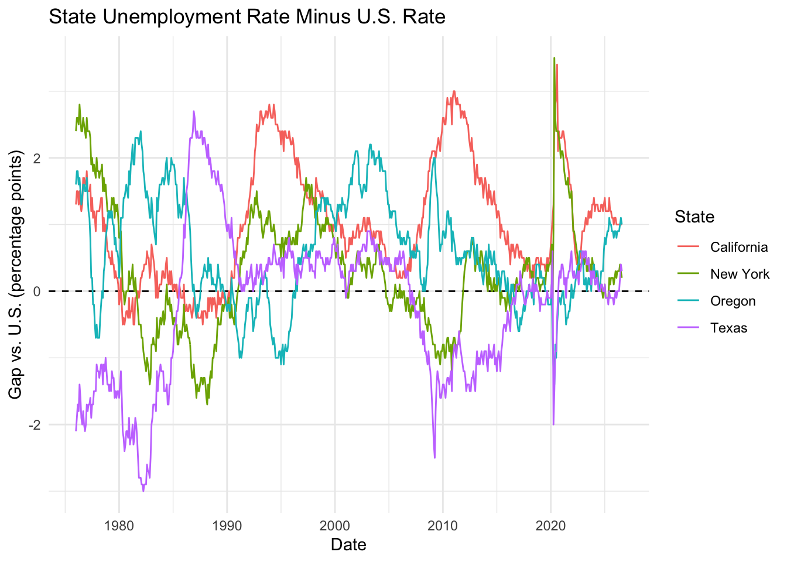

Registered S3 method overwritten by 'quantmod':
method from
as.zoo.data.frame zoo
── Attaching core tidyquant packages ─────────────────────── tidyquant 1.0.12 ──
✔ PerformanceAnalytics 2.1.0 ✔ TTR 0.24.4
✔ quantmod 0.4.29 ✔ xts 0.14.3
── Conflicts ────────────────────────────────────────── tidyquant_conflicts() ──
✖ zoo::as.Date() masks base::as.Date()
✖ zoo::as.Date.numeric() masks base::as.Date.numeric()
✖ PerformanceAnalytics::legend() masks graphics::legend()
✖ quantmod::summary() masks base::summary()
ℹ Use the conflicted package (<http://conflicted.r-lib.org/>) to force all conflicts to become errors
library(tidyverse)
── Attaching core tidyverse packages ──────────────────────── tidyverse 2.0.0 ──
✔ dplyr 1.2.1 ✔ readr 2.2.0
✔ forcats 1.0.1 ✔ stringr 1.6.0
✔ ggplot2 4.0.3 ✔ tibble 3.3.1
✔ lubridate 1.9.5 ✔ tidyr 1.3.2
✔ purrr 1.2.2
── Conflicts ────────────────────────────────────────── tidyverse_conflicts() ──
✖ dplyr::filter() masks stats::filter()
✖ dplyr::first() masks xts::first()
✖ dplyr::lag() masks stats::lag()
✖ dplyr::last() masks xts::last()
ℹ Use the conflicted package (<http://conflicted.r-lib.org/>) to force all conflicts to become errors
library(knitr)
Data
The data are monthly, seasonally adjusted unemployment rates for the United States and four states (Oregon, California, Texas, and New York). I pulled them from FRED (Federal Reserve Economic Data, St. Louis Fed) starting in January 1976. The data is saved to data/unemp_raw.rds and is read in from that file. The unemployment rate in FRED is labeled asprice.
I renamed price to unemployment_rate, added a region label, filled in the missing October 2025 observation (lost to the government shutdown) with the September 2025 value, and computed the month over month change in the unemployment rate within each region.
This plot shows each state’s unemployment rate minus the national rate in the same month. Values above the dashed line mean the state’s unemployment is higher than the U.S. rate. I wanted to see whether states sit persistently above or below the national rate, and how local labor markets compare with the larger national trend.
unemp_gap <- unemp |>group_by(date) |>mutate(gap = unemployment_rate - unemployment_rate[region =="United States"]) |>ungroup() |>filter(region !="United States")ggplot(unemp_gap, aes(x = date, y = gap, color = region)) +geom_hline(yintercept =0, linetype ="dashed") +geom_line() +labs(title ="State Unemployment Rate Minus U.S. Rate",x ="Date",y ="Gap vs. U.S. (percentage points)",color ="State" ) +theme_minimal()

Reflection
the assignment and making the plots was mostly straightforward once the templates were filled in. What tripped me up was smaller stuff in the wrangling: a typo in one of the region labels, passing the whole data frame into mean() instead of the column, and a date filter that used > instead of >= and accidentally dropped January 2015. None of those threw an obvious error right away, which made them easy to miss. The trickiest part was the gap plot, where I had to use group_by(date) so each state could be compared to the U.S. rate in the same month. I’m more comfortable with R in general now I think but more specifically the tidyverse package which I had learned a long time ago but mostly forgotten so using ggplot took a second to get used to again. I’m catching up to speed and think I can do more with it now.